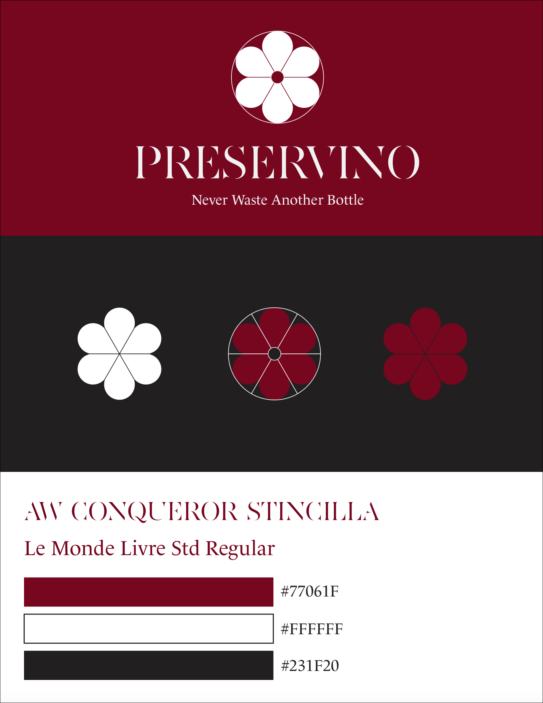

Role: Lead Brand Designer
Company: Preservio - A Yale-founded wine preserver start-up
- Philomena is a Yale CS + Design alum specializing in branding and creating designs for digital marketing.
She loves bold and soft designs and feeling nostalgic about the early 2000s internet aesthetic.
She considers herself a bad driver.
- Philomena is currently designing: her portfolio with VSCode



Formerly named Shinnkuu (meaning "vacuum" in Japanese), the founders wanted a full rebranding
and onboarded me
to create an identity that evoked elegance and could be both modern and timeless, like a bottle of fine wine.
to create an identity that evoked elegance and could be both modern and timeless, like a bottle of fine wine.
When designing the first iteration of the new logo, I took heavy inspiration from the sleek design of the product itself.
Using the design of the cap, I was able to create a flower symbol that could evoke freshness and preservation.
For the name, I researched several wine bottles and was able to select a serif typeface that gave the design a classic
look that could balance the more modern design of the product.
Using the design of the cap, I was able to create a flower symbol that could evoke freshness and preservation.
For the name, I researched several wine bottles and was able to select a serif typeface that gave the design a classic
look that could balance the more modern design of the product.

The final logo, however, became a combination of the old logo mark and new name - borrowing the geometric infinity symbol from the
old branding with the new name. Above are 2 iterations of the new product packaging design utilizing the new identity.
old branding with the new name. Above are 2 iterations of the new product packaging design utilizing the new identity.

A proposed design for the inside of the packaging that would provide a pop of color contrasting the dark exterior.
Role: CAC Marketing/Graphic Design Intern
Company: LG Electronics (Air Solutions Division)
Company: LG Electronics (Air Solutions Division)


Multiple variations of new LinkedIn banners for employees were created using the new global Brand kit.

Employees across offices were using inconsistent email signatures, so I designed and proposed
a new standardized version to promote brand consistency in communication.
a new standardized version to promote brand consistency in communication.
I was tasked by the North American HR office to design new logo concepts for the internal Onboarding Navigator program.
Each logo was built with a "kit-of-parts" designed to symbolize a specific characteristic of the program as seen on the bottom.
When designing my kit-of-parts, I made sure to use the new brand colors and typeface.
Each logo was built with a "kit-of-parts" designed to symbolize a specific characteristic of the program as seen on the bottom.
When designing my kit-of-parts, I made sure to use the new brand colors and typeface.
Additional logo concepts designed for the Onboarding Navigator program.
I was also tasked to redesign the "Friendcentive" program logo. On the right is the older logo which was deemed outdated by the new visual identity.
On the left was the proposed concept for the new logo which follows the new branding but also takes a more minimal and modern approach.
On the left was the proposed concept for the new logo which follows the new branding but also takes a more minimal and modern approach.


I developed and executed multiple office-wide events as part of a summer series in team-bonding.
Above are flyers I designed to promote the events throughout the whole office.
Above are flyers I designed to promote the events throughout the whole office.


More flyer designs used to promote the office events.

I worked closely with the social media specialist to design new digital marketing collateral that
could be used to advertise LG's HVAC products while following the new visual identity.
Above are the final variations of background templates to be used for posting product highlights.
could be used to advertise LG's HVAC products while following the new visual identity.
Above are the final variations of background templates to be used for posting product highlights.


I was able to output over 300 assets using the templates I created.
Every template, including the ones in the following slides, were redesigned in Canva
to be easily adapted and used by anyone in the marketing team.
Every template, including the ones in the following slides, were redesigned in Canva
to be easily adapted and used by anyone in the marketing team.


Above are general templates created that could be used for organic posts, announcements, product highlights, etc.
The circle shaped placeholders are made easily replaceable by photographs related to the post.
The circle shaped placeholders are made easily replaceable by photographs related to the post.
Above are variations of templates designed for speaker and event/conference content,
with each of the circles being replaced with an image of the speaker(s).
with each of the circles being replaced with an image of the speaker(s).
Above are concepts for paid marketing assets designed to combine lifestyle photography with products
while following the new branding. I was also able to design templates for partnership announcements.
while following the new branding. I was also able to design templates for partnership announcements.


Above are templates to be used as announcement for LG's Mobile Showroom tour dates
as well as LG's HVAC podcast announcement posts.
as well as LG's HVAC podcast announcement posts.